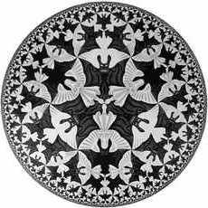

Winter 2014
|
 |
|
This is a W class, and one way that we fulfill that
attribute is by writing papers.
There will be two papers for this class.
The first will be on a topic related to the book Flatland by Edwin Abbott Abbott,
and the second will be either
I will give more information in the second half of the semester, in general, I urge
creativity. Second paper: This is to be either Historical/Expository or Mathematical. By Historical/Expository, I mean an exposition on a topic from the class, on a historical figure, or on the evolution of an idea. Our book is full of a lot of additional material which can help you get started. A mathematical paper should involve the exposition of a significant result that is interesting. Proofs, definitions, ilustrataions, etc. need to be included when appropriate. See Notes on choice of topic below for more information, Flatland: The book Flatland is a classic that has piqued the imagination of readers for 130 years. I want you to write a paper inspired by Flatland; there are many possible and legitimate directions to take. Simplistically (for the purpose of this paragraph), Flatland is both a social satire and an exploration of the meaning of space and dimension. One direction that you could take is to compare it to other well-known satires, either modern or classical, or both. You could use it as a point de départ to discuss education, or class, or education of Women in either Victorian England or contemporary US or elsewhere. You could explore its mathematical aspects, or mathematics that it touches on (geometry in higher-dimensional space). Flatland has inspired a lot of other works, including other books, movies, and articles, you could write about some of these, or about its affects on how people think. It is possible to argue a line from Flatland to special and general relativity. You could write additional chapetrs/sections for Flatland. The possibilities are limited only by your imagination. I will expect multiple sources in addition to the book Flatland, and solely on-line sources will not cut it, unless you can make a good argument. |
|
| Criterion | Expository | Mathematical | |
|---|---|---|---|
| Choice of topic | 5% | 5% | |
| Correctness and depth | 25% | 50% | |
| Exposition | 35% | 20% | |
| Mechanics (punctuation, etc.) | 25% | 20% | |
| References | 10% | 5% |